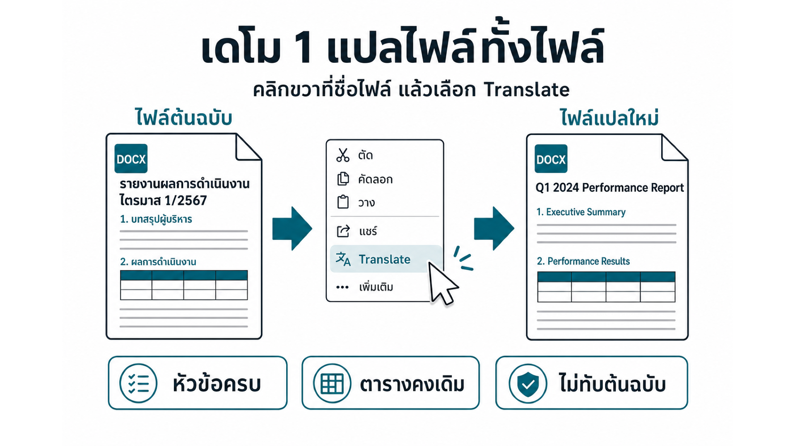
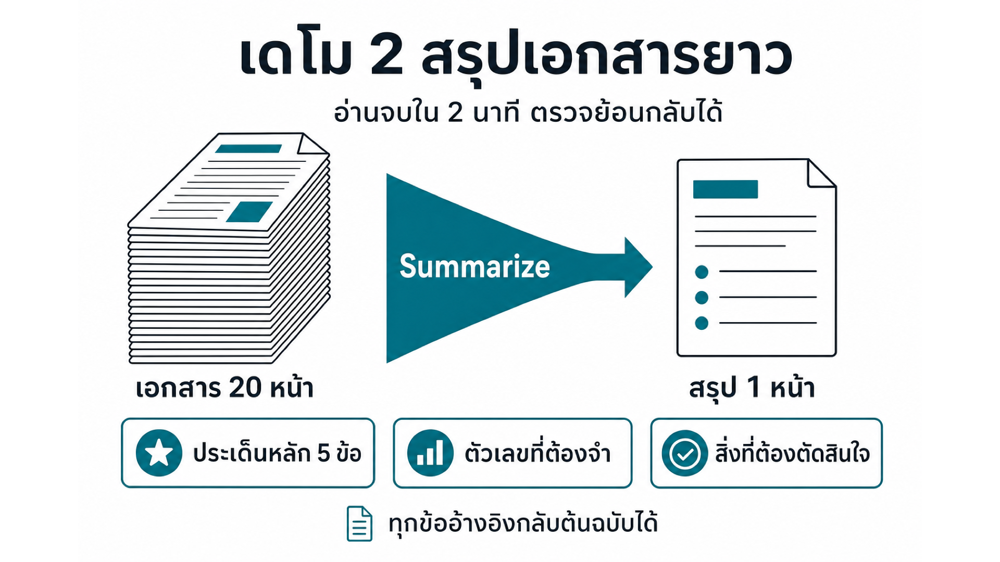
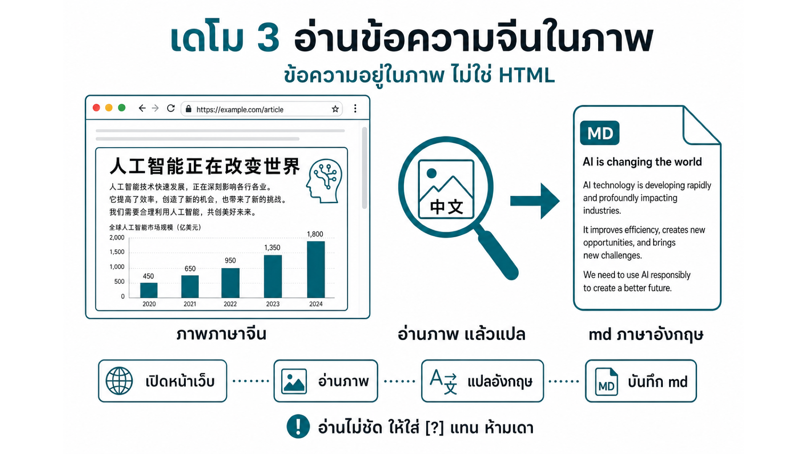
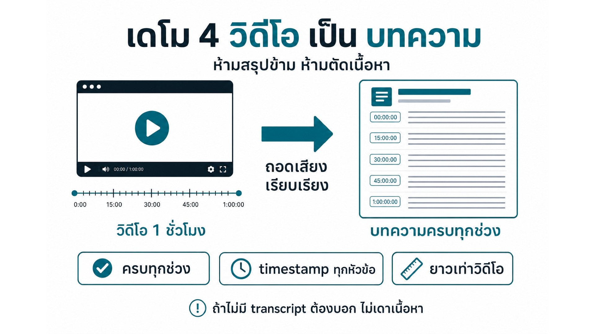
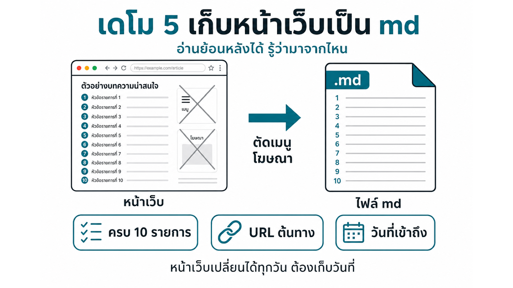
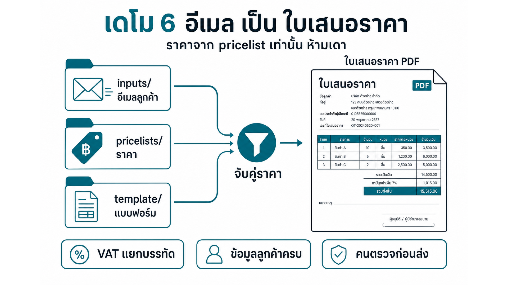
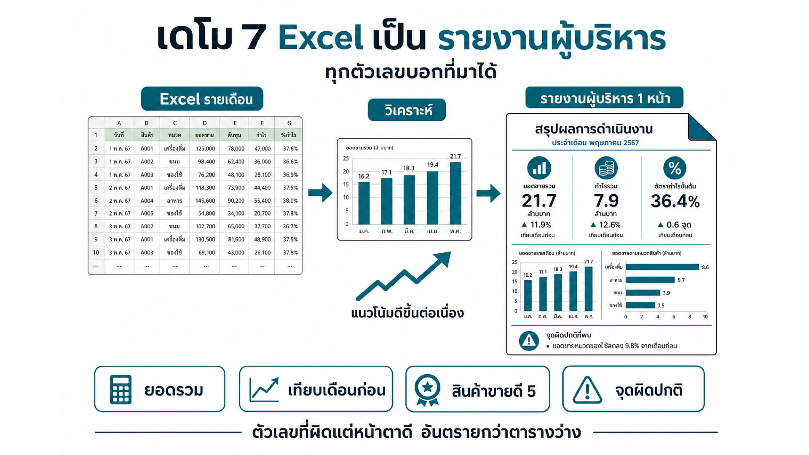

จากไฟล์เดียว ถึงงานทั้งกระบวนการ · ประมาณ 45 นาที
thClaws · workspace · Files + Chat
1 / 32เป้าหมายของการเดโมวันนี้ — ไม่ใช่ดูว่า agent เก่งแค่ไหน แต่ดูว่า Agent ทำอะไรได้บ้าง และเราต้องตรวจตรงไหน
| # | โจทย์ | ผลลัพธ์ |
|---|---|---|
| 1 | แปลไฟล์ทั้งไฟล์ Translate | ไฟล์แปล |
| 2 | สรุปเอกสารยาว Summarize | ไฟล์สรุปเนื่อหาตามระบุ |
| 3 | ข้อความจีนในภาพบนเว็บ | ไฟล์เนื้อหาในภาษาอังกฤษ |
| 4 | วิดีโอ YouTube | บทความ + timestamp |
| # | โจทย์ | ผลลัพธ์ |
|---|---|---|
| 5 | ดึงข้อมูลหน้าเว็บ | ไฟล์ข้อมูล พร้อมแหล่งอ้างอิง |
| 6 | อีเมลลูกค้า | ใบเสนอราคา PDF |
| 7 | Excel รายเดือน | รายงานผู้บริหาร PDF |
| 8 | ข้อมูลในไฟล์ data | dashboard HTML |
รวมประมาณ 30-45 นาที · เดโม 1–2 ใช้เมนูคลิกขวา ที่เหลือสั่งด้วย prompt
ขั้นตอน 3 คือช่วงที่ควรดูผลลัพธ์ขณะทำงาน

จุดที่คนดูมักพลาด — ไฟล์แปลหน้าตาดี แต่ตัวเลขในตารางเพี้ยน ต้องเปิดเทียบทุกครั้ง

Summarize ให้สรุปตามที่โมเดลเห็น — ถ้าต้องการหัวข้อตายตัว ใช้ prompt แทนเมนู
สรุปที่ดีไม่ใช่สั้นที่สุด แต่คืออันที่พากลับไปต้นฉบับได้

ภาพคือหลักฐาน — ถ้าอ่านไม่ได้ ต้องบอก ไม่ใช่แต่งให้ครบ

บทความที่ “ไม่ตัด” ต้องยาวพอ ๆ กับวิดีโอ — สั้นกว่านั้นคือตัด

ไฟล์ที่ไม่มีวันที่ คือไฟล์ที่อีกสามเดือนเราจะไม่รู้ว่ายังจริงไหม

เอกสารที่ออกถึงลูกค้า ต้องมีคนเซ็นชื่อกำกับเสมอ — agent เตรียมให้ ไม่ใช่ส่งเอง

ตัวเลขที่ผิดแต่หน้าตาดี อันตรายกว่าตารางว่าง
จากข้อมูลดิบถึงเครื่องมือที่ใช้ได้ — ในคำสั่งเดียว
เลือกงานของคุณที่ตรงกับช่องใดช่องหนึ่ง — นั่นคือเดโมแรกที่ควรลอง
prompt ที่ดีคือ briefing งาน ไม่ใช่คำสั่งสั้น ๆ
ถาม–ตอบ · อยากลองเดโมไหนต่อ ยกมือ